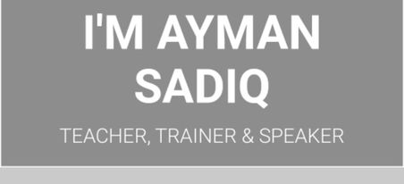
Home About Contract Login
Let's Know About Ayman Sadik

Ayman Sadik
Teacher ,Trainer & Motivational Speaker
Ayman Sadiq (Bengali: আয়মান সাদিক) (born September 2, 1992) is a Bangladeshi educator, speaker, author,entrepreneur, and content creator. He is best known as the founder of 10 Minute School. An online educational platform that covers academic classes from classes 1 to 12, covering the entire academic syllabus of the Bangladesh schooling system, university admission subjects covering different branches of study, and skills training. He is one of the most influential people in Bangladesh. He received numerous awards for his works. Ayman received the Queen’s Leader Award 2018 for creating access to quality education for millions of students in Bangladesh. He is also a One young world ambassador and he recently got enlisted in the prestigious Forbes 30 under list. He has a YouTube channel named Ayman Sadiq with 1.04 million subscribers
Early Life & Education
Ayman Sadiq was born on September 2, 1992, in Comilla, Bangladesh to Abu Taiyeb and Sharmeen Akter. His mother is a housewife and his father is Brigadier General of Bangladesh Army. He is one of two siblings. He studied at Adamjee Cantonment College in a science background and wanted to be a doctor or engineer. However, he enrolled at the University of Dhaka in BBA. Sadiq completed BBA and MBA from IBA, University of Dhaka. He cherished a dream to be a teacher since student life eventually turned his dream into reality establishing 10 Minute School.[6][1]
Some Pictures Of Ayman Sadik


 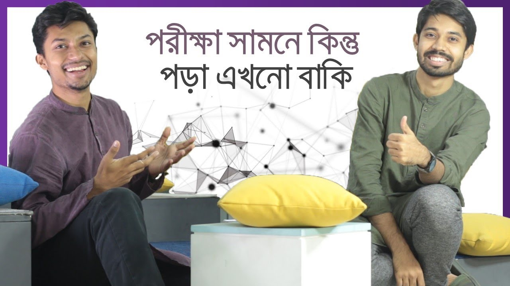
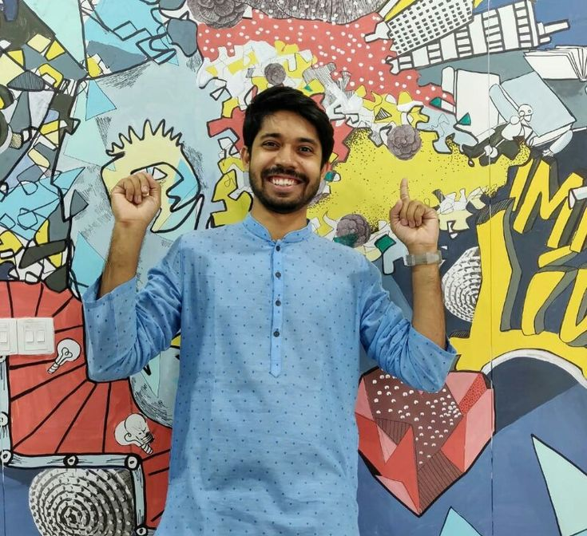
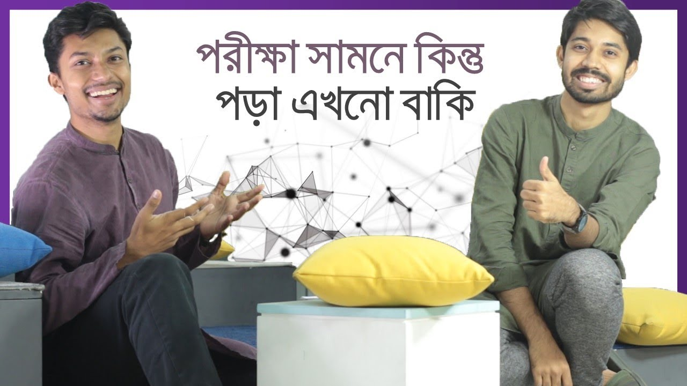
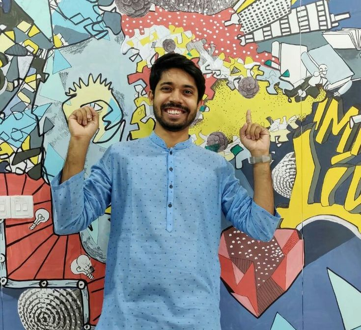
10 Minutes School
Ayman Sadiq began the teaching profession by providing tuition to the students in different coaching at Framerate, Dhaka. But he was able to provide tuition to a little or a fixed number of students. Then he tried to extend his tuition to a large number of students who are situated in the remote corner of the country. He inspired by a poor student who comes to Dhaka from the village with little money to take coaching. The student was unable to afford the cost of Dhaka city. Then Ayman decided to launch a platform from where anyone can get lessons without any cost from the remote corner of the country. In 2014, he launched the 10 Minute School and never looked back in the career. The platform is designed to provide training in English, science, mathematics and skill development. Now he is a star in the country and achieved several international recognition.[6]
Ayman Sadik's audio
Ayman Sadik's 10 minute's school vedio
Ayman Sadik's Book's Poster
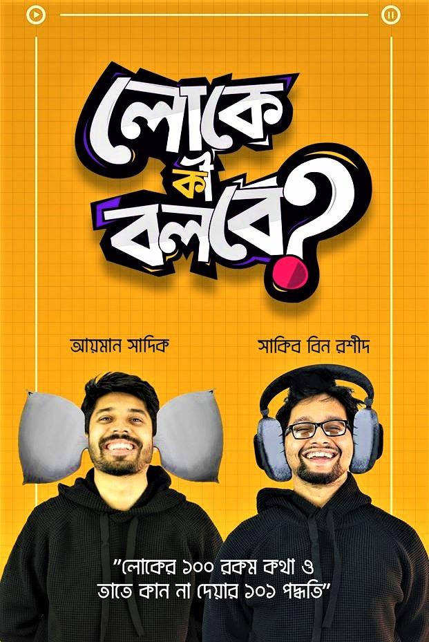 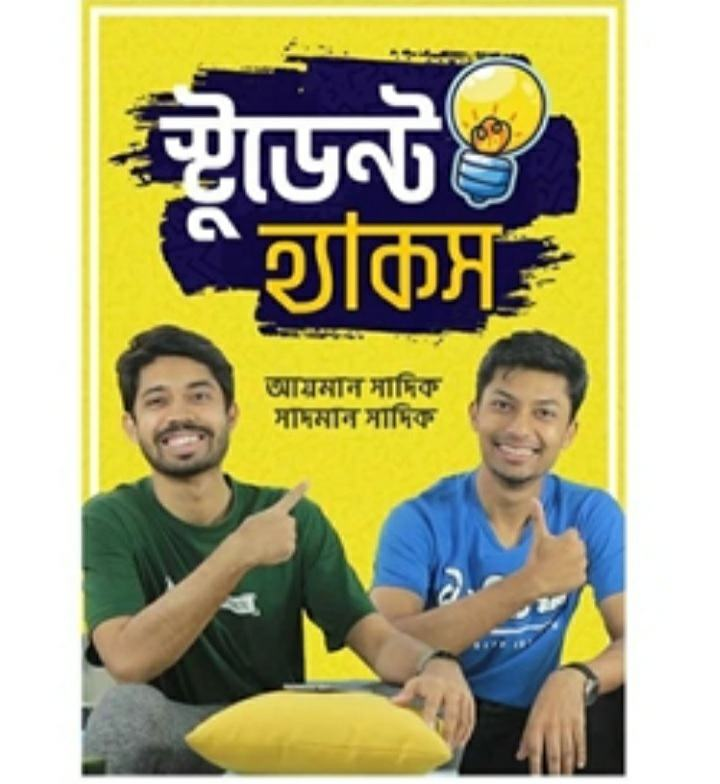 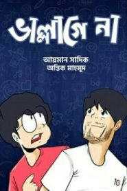 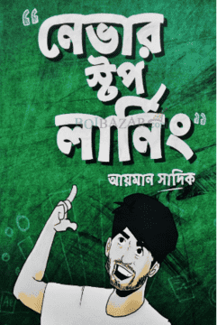Awards
- Queen's Young Leaders Award 2018.
- Forbes' 30 under 30 Social Entrepreneurs.
- BRAC Manthan Digital Innovation Award.
- Swiss Embassy Award for Social Impact.
- Youth Award 2016.
- DYDF Youth Icon Award.
- Bizmaestros Champion.
- Brandwitz'13 Champion.
Achivement of Ayman Sadik
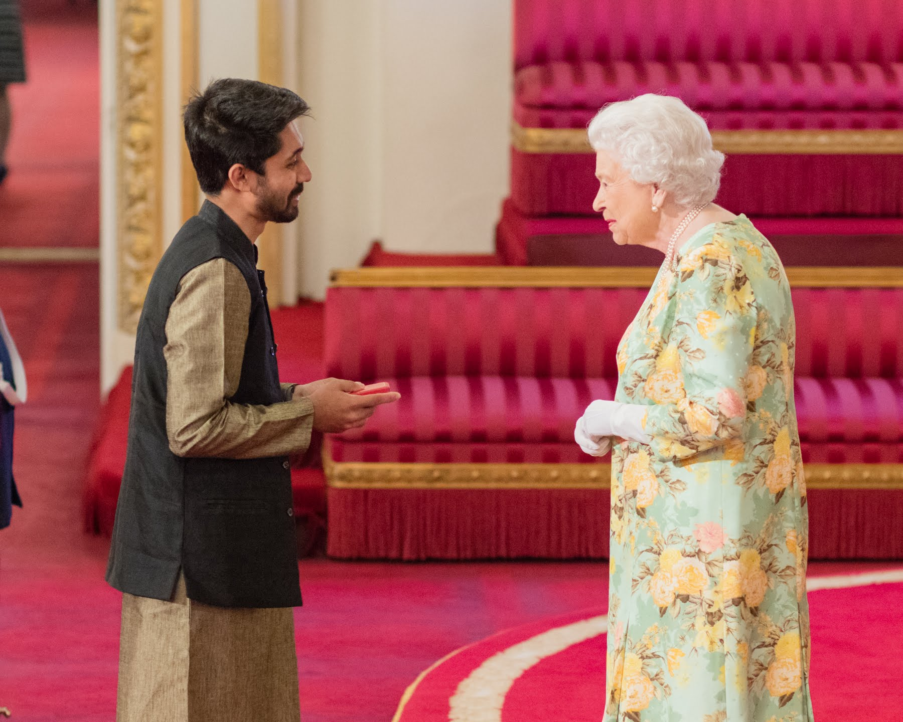
 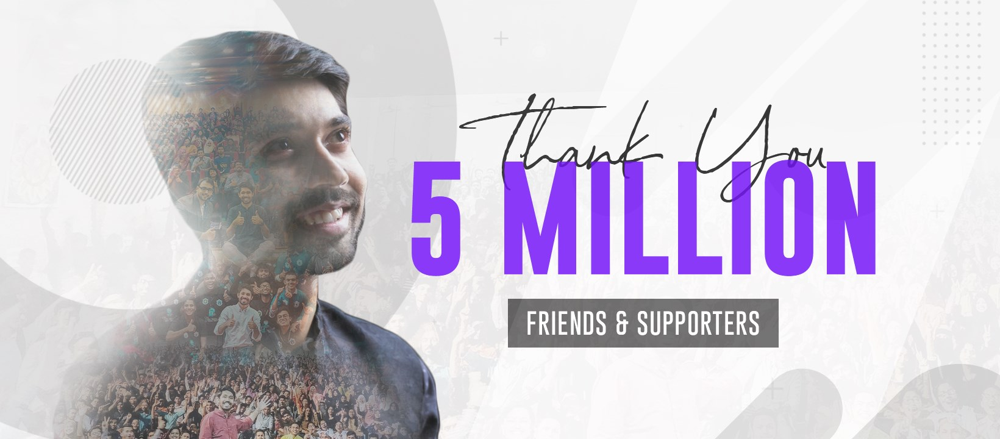
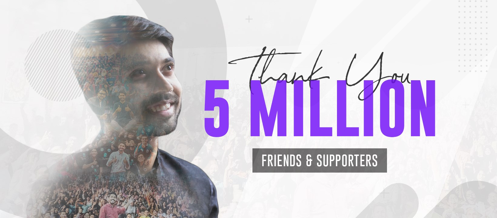